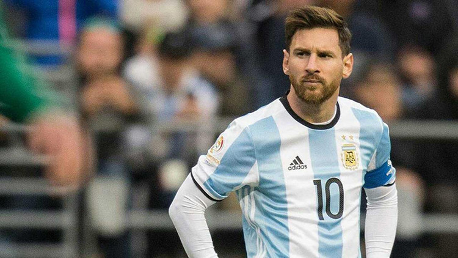
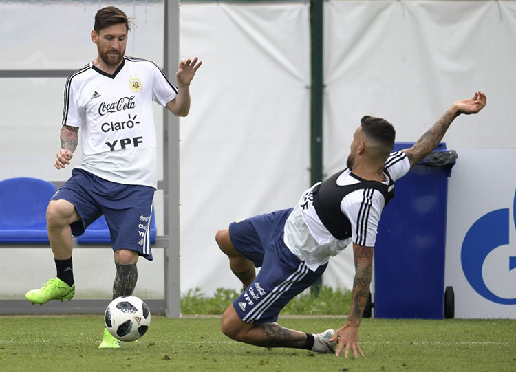

|
|
ទំព័រដើម | អំពី | កំសាន្ត | បច្ចេកទេស | កីឡា | ទំនាក់ទំនង | ||
Messi ត្រឡប់មកហ្វឹកហាត់ជាមួយជម្រើសជាតិលើកដំបូងតាំងពីចប់ World Cupក្រុមជម្រើសជាតិអាហ្សង់ទីនបានប្រមូលផ្ដុំហ្វឹកហាត់នៅទីក្រុងម៉ាឌ្រីដប្រទេសអេស្ប៉ាញកាលពីថ្ងៃម្សិលមិញដោយមានទាំងវត្តមានប្រធានក្រុម Lionel Messi ផង។ |
|  |
|
ខ្សែប្រយុទ្ធវ័យ៣២ឆ្នាំបានវិលមកលេងឲ្យជម្រើសជាតិវិញលើកដំបូងគិតចាប់តាំងពីអាហ្សង់ទីនខកចិត្តធ្លាក់ចេញពី World Cup ត្រឹមវគ្គ១៦ក្រុមមក។ Messi បានសុំដកខ្លួនពីជម្រើសជាតិមួយរយៈដើម្បីសម្រាកនិងផ្ដោតលើក្លឹបអាជីពក្នុងនោះរូបគេខកខានមិត្តភាព៦ប្រកួត ដែលអាហ្សង់ទីនឈ្នះ៤ ស្មើ១ និងចាញ់១។ អាហ្សង់ទីននឹងលេង២ប្រកួតនៅប្រទេសអេស្ប៉ាញដែលសុទ្ធតែជាជំនួបមិត្តភាព គឺប៉ះក្រុមជម្រើសជាតិវ៉េណេស៊ុយអេឡា និងម៉ារ៉ុក។ នេះគឺជាការត្រៀមលក្ខណៈមួយដែររបស់ក្រុមលោក Lionel Scaloni សម្រាប់ព្រឹត្តិការណ៍ Copa America ដែលមានប្រេស៊ីលធ្វើជាម្ចាស់ផ្ទះ៕ |
|  |
| 2019 at ant training | Made by: Chea Menghuy |